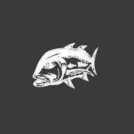

📲 Add to Home Screen for full app
Install
✕

Fishing Log for NZ Waters
0 catches logged
📸 Photo
Add a photo of your catch
Tap to choose from your camera roll
🖼 Upload Photo
🐟 Catch Details
Fish species
Select species...
Snapper
Kingfish
Kahawai
Gurnard
John Dory
Blue Cod
Trevally
Tarakihi
Moki
Hapuka
Crayfish
Other
Custom species (if Other)
Length (cm)
Weight (kg)
Fishing Method
Method
Select...
Fly fishing
Spinning
Bait fishing
Trolling
Jigging
Surfcasting
Kontiki
Longline
Platform
Select...
Wading
Boat
Kayak
Fly / Bait
Colour & size
Fishing Rig
✏️ Manage saved entries
Notes
📅 Date & Time
Date
Time
📍 Location
Search location
Location Nickname
— your personal name for this spot
Latitude
Longitude
📡 Use my GPS location
💡 Type a place to move the pin · drag pin or tap map to reverse-geocode
🛰 Satellite
Save Catch
Tide Station
📍 Bay of Plenty, NZ (default)
⚡ Calculated
📡 GPS
📊 24-Hour Tide Curve
-12h
now
+12h
Lunar Data
🌙 Calculated (accurate)
🌙 Moon Phase
📅 Moon Calculator
Date
🎣 Moon & Fishing
Solunar Data
📐 Calculated (accurate)
Location
📍 Bay of Plenty, NZ (default)
📡 Use GPS
🐟 Solunar Bite Times —
Major ~2 hrs · Minor ~1 hr · Red line = now
12am
6am
12pm
6pm
12am
Major
Minor
📅 Select Date
📊 Day Rating
Weather
⏳ Loading...
⛅
—
Loading…
Detecting location…
⏳
Loading conditions…
Wind
—
—
Gust —
Pressure
—
hPa
—
Sky
—
feels like
Rain —
🌊 Marine
🕐 Next 24 Hours
Loading…
Major bite
Minor bite
Strong wind
🌡 Barometer
970
1013
1050
— hPa
Waiting for data…
—
3-Hour Pressure History
-3h
now
⚡ Fishing Conditions
—
📅 7-Day Forecast
Loading forecast…
Excellent fishing
Fair conditions
Poor / stay safe
—
—
—
—
—
—
—
—
🔄 Refresh Weather
🗺 All Catch Locations
🗺 Street
🛰 Satellite
No catches logged yet.
📌 My Fishing Spots
No locations saved yet.
0 catches
Newest first
Oldest first
By month
By location
By species
All months
January
February
March
April
May
June
July
August
September
October
November
December
All species
💾 Backup Data
📂 Import Backup
🎣
No catches yet.
Head to the Log tab!
Fishing Insights
📝
Log
🌊
Tide
🌙
Moon
🐟
Bite
⛅
Weather
📍
Map
🏆
Catches
📊
Stats
✕
✏️ Manage Saved Entries
✕
Tap ✕ to hide an entry from autocomplete. It stays in your existing catches — just won't appear as a suggestion.
Done
🗑️
Are you sure you want to delete this awesome catch?
This action cannot be undone.
Keep it
Delete
✏️ Edit Catch
✕
📸 Photo
No photo — tap to add
🖼 Upload Photo
🐟 Catch Details
Fish species
Select species...
Snapper
Kingfish
Kahawai
Gurnard
John Dory
Blue Cod
Trevally
Tarakihi
Moki
Hapuka
Crayfish
Other
Custom species (if Other)
Length (cm)
Weight (kg)
🎣 Method & Bait
Method
Select...
Fly fishing
Spinning
Bait fishing
Trolling
Jigging
Surfcasting
Kontiki
Longline
Platform
Select...
Wading
Boat
Kayak
Fly / Bait
Colour & size
Fishing Rig
Notes
📅 Date & Time
Date
Time
📍 Location
Location Nickname
Search location
Latitude
Longitude
📡 Use my GPS location
🛰 Satellite
Cancel
💾 Save Changes